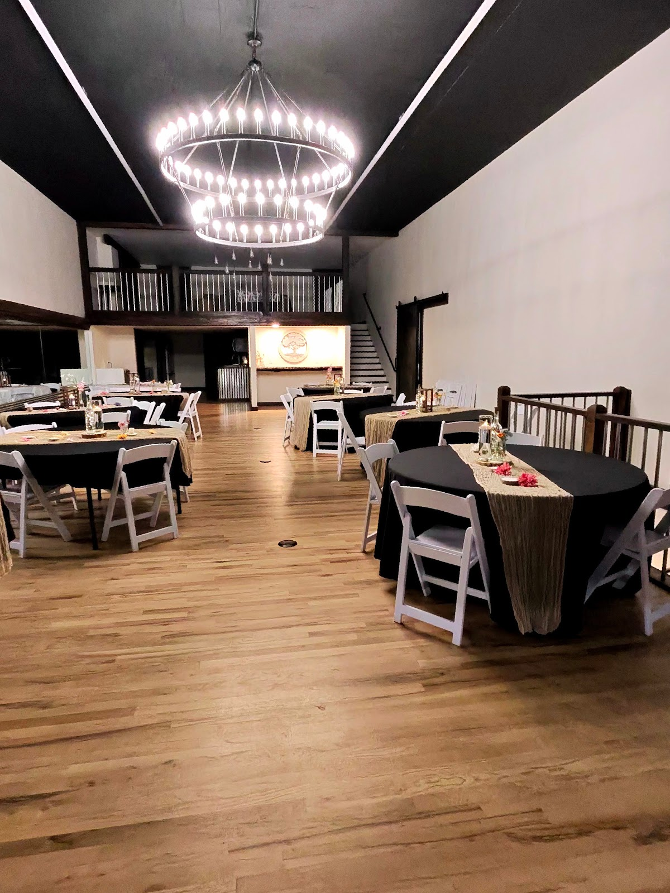
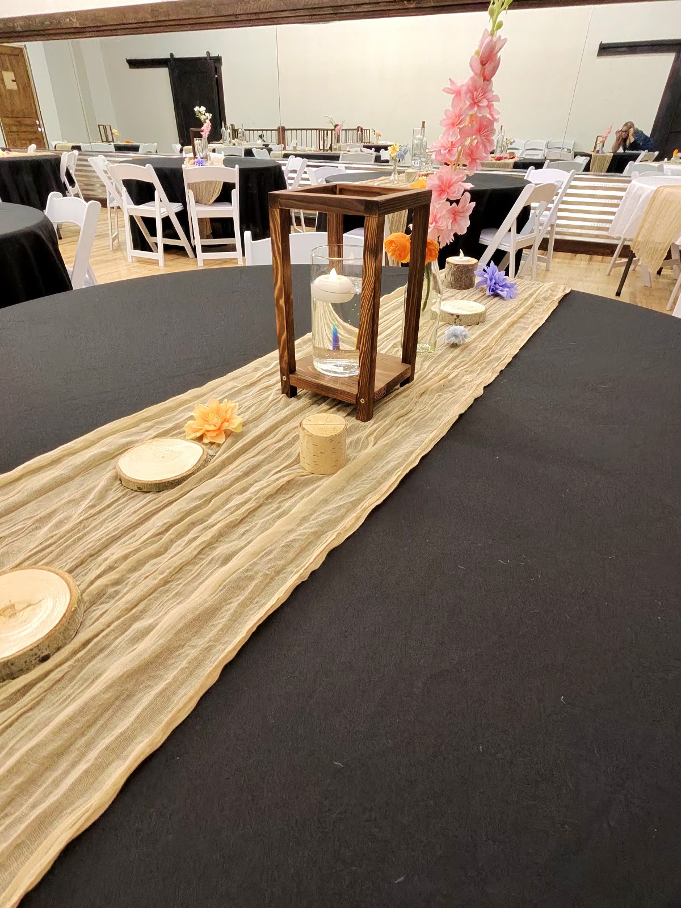

A warm, spacious gathering place restored for families to reconnect, celebrate, and make lasting memories, together, under one roof.
The Burland is a lovingly restored historic building created for one simple purpose: to bring families together under one roof.
With room for grandparents, children, and grandchildren alike, The Burland offers comfort, space, and a peaceful setting where relationships grow naturally, around shared meals, games, conversations, and quiet moments.
This is not a hotel. This is not a conference center. This is a family home, made bigger.

Over 10,000 square feet spread across three floors, so everyone has room to be together and space to rest.
Multiple family suites so no one has to split up across town.
Large gathering areas for dinners, dancing, and celebrations.
A dedicated area to keep kids and teens entertained.

While The Burland is first and foremost a place for families, it's also a meaningful setting for weddings. With spacious gathering areas and room for loved ones to stay together, weddings here feel personal and relaxed, surrounded by family, not crowds.
Explore WeddingsLocated in downtown St. Anthony, surrounded by natural beauty and small-town calm, 45 minutes from Yellowstone, with fresh air and quiet moments built right in.